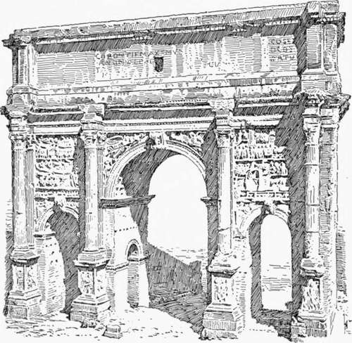

Church Architecture Of The Florentine Renaissance. Part 4
Description
This section is from the book "Character Of Renaissance Architecture", by Charles Herbert Moore. Also available from Amazon: Character of Renaissance Architecture.
Church Architecture Of The Florentine Renaissance. Part 4
The front of Santa Maria Novella is notable as the first mediaeval one which was worked over by a Renaissance architect, and as a whole, notwithstanding that it is a patchwork of incongruous elements, it exhibits a remarkable unity of effect. The merit of Alberti's work here consists in its quietness. The applied orders are in low relief, their details are unobtrusive, and the mellowing effect of age on the beautiful marble incrust-ing has fused the whole front into an exquisite colour harmony that is almost unmatched elsewhere.
Very different is the west front of San Francesco of Rimini, in which Alberti has introduced a Roman composition without any admixture of mediaeval elements. It is substantially a reproduction of the arch of Septimius Severus. The details are in higher relief here in conformity with the ancient model, and the ressauts of the entablature become correspondingly more salient. A ressaut of this kind is another feature of Roman art which has no justification on structural grounds, and to which there is nothing analogous in any reasonable style of architecture. To set a useless column in advance of an entablature and then make a ressaut to cover it, is irrational.
Alberti's capital work in church architecture is Sant' Andrea of Mantua, begun in 1472, the year of the architect's death, in which he made a frank return to Roman models in the structural forms of the whole edifice, as well as in the ornamental details — a thing that was rarely done by the architects of the Renaissance. The plan (Fig. 18) is, however, cruciform, and the dome over the crossing is supported in the Byzantine manner on pendentives. The nave (Plate II) has a barrel vault on massive square piers connected by arches, the intervals between the piers forming side chapels, and the lower part of each pier having a small square chamber within it, so that it does not look as massive on the plan as it does in elevation. The east end has the strictly Roman form of a semicircular apse with a half-dome vault. The details of the interior consist of a single order of pilasters, on high pedestals, set on the angles of the piers, and of rich Roman coffering on the surfaces of the vaulting. The piers closely resemble those of the so-called arch of the Silversmiths in Rome, which it is not unlikely that Alberti had in mind in designing them, inasmuch as he was a devoted student of Roman architectural antiquities. This interior is, I think, one of the very finest that the Renaissance produced. The justness of its proportions, the simplicity of the structural scheme, and the quietness of the ornamental details are all admirable. With the given elements it is hard to see how a better composition could be made; but the incongruity between the structural and ornamental systems, the entirely superficial use of the order, and its unfitness as ornament where it has no structural meaning, are fundamental defects of this as of most other Renaissance designs. The scheme of St. Andrea foreshadows that of St. Peter's, and was undoubtedly in the mind of Bramante when he was preparing his colossal project for Pope Julius II.
Plate II
Sant Andrea Mantua
The west front of this church (Fig. 19) is again an adaptation of a Roman triumphal arch design. It is, in fact, as the plan (Fig. 18) shows, a great porch set against the true front, an arch reaching to the entablature opens into the lateral compartment on each side, and each of these compartments has a barrel vault with its axis perpendicular to that of the great central one. The entablature of the small order is carried across the front of each lateral bay, dividing it into two stages, and the great order rises through it, embracing both stages, and forming an early instance of the so-called colossal order that became common in the later Renaissance. The great order is raised on and has no correspondence in its parts with those of the building itself. In outline it is an unbroken rectangle crowned with a pediment. A very shallow order of Corinthian pilasters divides it into a wide central bay and two narrow ones. A great arch over a smaller order opens into a barrel-vaulted recess, on the three sides of which the entablature is returned. A rectangular portal, with square jambs and a cornice, opens into the nave, and pedestals, and both pedestals and pilasters of this order are panelled, while the small order rests directly on the pavement and its pilasters are fluted. It is noticeable that the design of the central arch is almost exactly like that of the central portal of Santa Maria Novella in Florence, the smaller entablature being broken into shallow ressauts over the pilasters, giving the same character to the imposts. The front as a whole has the quiet and refined character that distinguishes this architect's work in general.
Fig. 18.—Sant' Andrea, Mantua.
Fig. 19. — Fararlp nf Kant' Anrlrea. Mantua.
Fig. 20.— Arch of Septimius Severus.
That Alberti derived all of these facades, and especially that of St. Andrea, from the Roman triumphal arch scheme a direct comparison will show; and the arch of Septimius Severus (Fig. 20) may, I think, be taken as the model that he had chiefly in mind. In Santa Maria Novella the mediaeval scheme upon which he had to fit his work prevented such a disposition of the columns, and such general proportions as this model exhibits. He was obliged to make the lateral intercolumniations much wider than the central one, and to make the whole rectangle of the composition more oblong than that of the ancient monument; but in most other points he has followed the arch of Septimius Severus closely. As in the Roman design the entablature crowns the wall instead of the order, so that ressauts have to be formed to cover the columns. The insertion of the angle pilaster is a departure from the Roman scheme, and the placing of the stumpy pilaster of the attic over the great pilaster, instead of on the column, is another point of difference. But the general scheme of the ground story and attic will be seen to resemble that of the Roman design about as closely as the mediaeval edifice on which it is ingrafted would allow. In San Francesco at Rimini the architect had a freer hand, and the order is treated in closer conformity with the ancient model as to the spacing of the columns and other details. The angles are treated precisely as they are in the arch of Septimius Severus, the pilasters being omitted, and the entablature at each end extending beyond the ressaut. The attic is omitted here, and the unfinished upper part of the facade is necessarily of different design.
Continue to:
- prev: Church Architecture Of The Florentine Renaissance. Part 3
- Table of Contents
- next: Church Architecture Of The Florentine Renaissance. Part 5